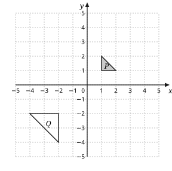
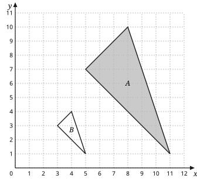
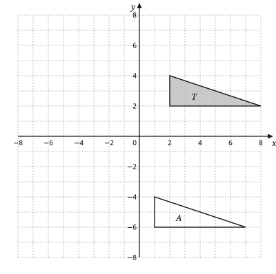

<script src="/assets/redirect.js"></script>
<section class="theory" data-section="IGCSE-23.2">
<h2>23.2 Further transformations</h2>
<p class="src">Based on Cambridge IGCSE Mathematics Core and Extended Coursebook (Karen Morrison and Nick Hamshaw), Chapter 23 Transformations and vectors, printed pp.801–808. Own wording and new numbers, following the Cambridge IGCSE Extended treatment of enlargements with fractional and negative scale factors and of combined transformations.</p>
<p class="key-words"><strong>Key words:</strong> <em>enlargement</em>, <em>scale factor</em></p>
<h3>Fractional scale factors</h3>
<p>An <strong>enlargement</strong> with a <strong>scale factor</strong> between 0 and 1 makes the image smaller than the object, and the image is closer to the centre. For scale factor \(\tfrac{1}{3}\), every distance from the centre, and every length of the shape, is divided by 3. It is still called an enlargement.</p>
<h3>Negative scale factors</h3>
<p>With a negative scale factor, the image is on the opposite side of the centre and is upside down. For scale factor \(-2\), go from the centre to an object point, then go twice as far in the opposite direction. With centre the origin, scale factor \(k\) maps \((x, y)\) to \((kx, ky)\), so scale factor \(-1\) is the same as a rotation of \(180^\circ\) about the origin.</p>
<div class="ms-widget" data-widget="enlarge-grid"></div>
<script src="../../assets/widget-kinds-pkg18.js"></script>
<h3>Combined transformations</h3>
<p>When one transformation is followed by another, carry them out in order: the image after the first becomes the object for the second. The result can sometimes be described as a single transformation; for example, two reflections in parallel lines give a translation.</p>
<div class="worked-example">
<h4>Worked example 1: A fractional scale factor</h4>
<p class="src">Own example, enlargement with a fractional scale factor.</p>
<p>Triangle \(P\) has vertices \((4, 1)\), \((10, 1)\) and \((4, 7)\). Find the vertices of its image after an enlargement, scale factor \(\tfrac{1}{3}\), centre \((1, 1)\).</p>
<ol class="steps">
<li>From the centre: \(\begin{pmatrix}3\\0\end{pmatrix}\), \(\begin{pmatrix}9\\0\end{pmatrix}\), \(\begin{pmatrix}3\\6\end{pmatrix}\) <span class="mark">M1</span></li>
<li>Divide by 3: \(\begin{pmatrix}1\\0\end{pmatrix}\), \(\begin{pmatrix}3\\0\end{pmatrix}\), \(\begin{pmatrix}1\\2\end{pmatrix}\) <span class="mark">M1</span></li>
<li>Image vertices \((2, 1)\), \((4, 1)\), \((2, 3)\) <span class="mark">A1</span></li>
</ol>
<p class="final"><strong>Answer:</strong> \((2, 1)\), \((4, 1)\), \((2, 3)\)</p>
</div>
<div class="worked-example">
<h4>Worked example 2: Describing a negative enlargement</h4>
<p class="src">Own example, enlargement with a negative scale factor.</p>
<p>Triangle \(P\) has vertices \((1, 1)\), \((2, 1)\) and \((1, 2)\). Triangle \(Q\) has vertices \((-2, -2)\), \((-4, -2)\) and \((-2, -4)\). Describe fully the single transformation that maps \(P\) onto \(Q\).</p><p></p>
<ol class="steps">
<li>\(Q\) is twice the size of \(P\) and upside down on the other side of the origin: enlargement <span class="mark">B1</span></li>
<li>Each vertex is multiplied by \(-2\): scale factor \(-2\) <span class="mark">B1</span></li>
<li>Centre \((0, 0)\) <span class="mark">B1</span></li>
</ol>
<p class="final"><strong>Answer:</strong> Enlargement, scale factor \(-2\), centre \((0, 0)\)</p>
</div>
<h3>Common mistakes</h3>
<ul><li>Calling a scale factor of \(\tfrac{1}{3}\) a 'reduction' and leaving out the words enlargement or scale factor.</li><li>Drawing the image of a negative enlargement on the same side of the centre as the object.</li><li>Carrying out combined transformations in the wrong order.</li></ul>
<h3>Past paper</h3>
<p class="src">0580/21/O/N/17 Q16, official QP and official MS.</p>
<p></p><p>Describe fully the single transformation that maps triangle \(A\) onto triangle \(B\). [3]</p>
<details><summary>Mark scheme</summary>
<ol class="steps">
<li>Enlargement <span class="mark">B1</span> Official MS: Enlargement, 1 mark.</li>
<li>Scale factor \(\tfrac{1}{3}\) <span class="mark">B1</span> Official MS: 1/3, 1 mark.</li>
<li>Centre \((2, 1)\) <span class="mark">B1</span> Official MS: (2, 1), 1 mark.</li>
</ol>
</details>
<h3>Past paper</h3>
<p class="src">0580/23/M/J/21 Q10, official QP and official MS.</p>
<p></p><p>(a) Describe fully the single transformation that maps triangle \(T\) onto triangle \(A\). [2]</p><p>(b) Draw the image of triangle \(T\) after an enlargement, scale factor \(-\tfrac{1}{2}\), centre \((0, 0)\). [2]</p>
<details><summary>Mark scheme</summary>
<ol class="steps">
<li>(a) Translation <span class="mark">B1</span> Official MS: Translation, B1.</li>
<li>(a) \(\begin{pmatrix}-1\\-8\end{pmatrix}\) <span class="mark">B1</span> Official MS: column vector (−1, −8), B1.</li>
<li>(b) Image with the correct scale factor and orientation <span class="mark">B1</span> Official MS: 2 marks for the image at (−1, −1), (−4, −1), (−1, −2); B1 for image correct scale factor and orientation but wrong position, or for enlargement scale factor 1/2 centre (0, 0).</li>
<li>(b) Image at \((-1, -1)\), \((-4, -1)\), \((-1, -2)\) <span class="mark">B1</span> Official MS: image at (−1, −1), (−4, −1), (−1, −2), both marks.</li>
</ol>
</details>
<div class="quick-check">
<h4>Quick check 1</h4>
<p>The point \(P(7, 4)\) is enlarged with scale factor \(\tfrac{1}{3}\) and centre \((1, 1)\). Find the \(x\)-coordinate of the image of \(P\).</p>
<details><summary>Worked solution</summary>
<ol class="steps"><li>Horizontal distance from the centre is 6; one third of 6 is 2.</li></ol>
<p class="final"><strong>Answer:</strong> \(3\)</p>
</details>
</div>
<div class="quick-check">
<h4>Quick check 2</h4>
<p>The point \(P(3, 4)\) is enlarged with scale factor \(-2\) and centre \((0, 0)\). Find the \(y\)-coordinate of the image of \(P\).</p>
<details><summary>Worked solution</summary>
<ol class="steps"><li>\(-2\times4\)</li></ol>
<p class="final"><strong>Answer:</strong> \(-8\)</p>
</details>
</div>
<div class="quick-check">
<h4>Quick check 3</h4>
<p>The point \(P(2, 3)\) is reflected in the \(y\)-axis. The image is then translated by the vector \(\begin{pmatrix}5\\-1\end{pmatrix}\). Find the \(x\)-coordinate of the final image.</p>
<details><summary>Worked solution</summary>
<ol class="steps"><li>Reflection gives \((-2, 3)\).</li><li>Translation gives \((3, 2)\).</li></ol>
<p class="final"><strong>Answer:</strong> \(3\)</p>
</details>
</div>
</section>
